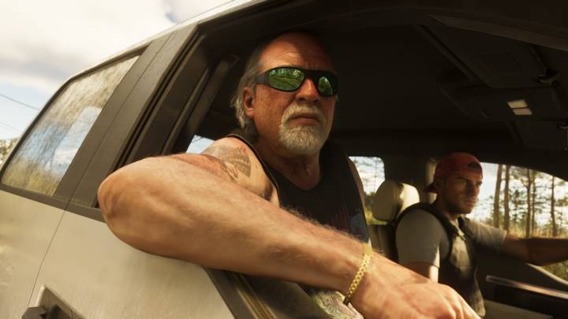
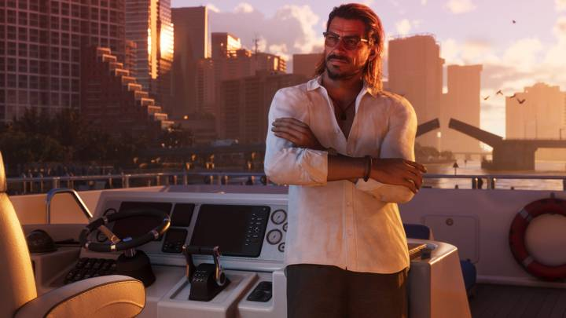
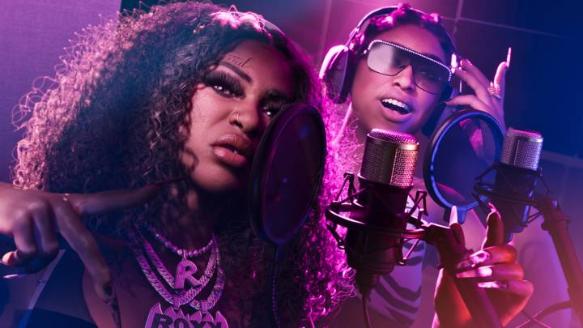

Все персонажи GTA 6
Обновлено: 24.09.2026

- Главных героев двое: Джейсон Дюваль и Лусия Каминос.
- Rockstar официально представила ещё 6 персонажей.
- Список пополним после выхода игры.
Главные герои

Лусия Каминос (Lucia Caminos)
Отец научил её драться, едва она начала ходить. Отсидела в тюрьме Леониды и вышла с твёрдым планом на хорошую жизнь. Подробнее о Лусии

Джейсон Дюваль (Jason Duval)
Вырос среди мошенников, служил в армии, работал на наркокурьеров в Кис. Хочет лёгкой жизни, но всё становится сложнее. Подробнее о Джейсоне
Другие персонажи

Кэл Хэмптон (Cal Hampton)
Друг Джейсона и напарник Брайана. Любит сидеть дома и слушать переговоры береговой охраны.

Брайан Хедер (Brian Heder)
Контрабандист старой закалки из Кис. Пускает Джейсона жить бесплатно в обмен на помощь.

Рауль Баутиста (Raul Bautista)
Опытный грабитель банков, всегда ищет новых людей в команду.

Буби Айк (Boobie Ike)
Легенда улиц Вайс-Сити: недвижимость, стрип-клуб и студия звукозаписи.
Дре’Куан Прист (Dre’Quan Priest)
Скорее делец, чем гангстер. Подписан на лейбл Only Raw Records.

Real Dimez
Рэп-дуэт Бэй-Люкс и Рокси, звёзды соцсетей, подписаны на Only Raw Records.
Подробные биографии — в статье Второстепенные персонажи GTA 6.
Источники: Rockstar Games — официальный сайт GTA VI (rockstargames.com/VI), Rockstar Newswire.